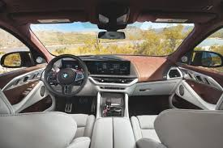
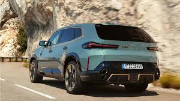
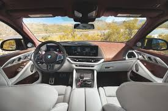
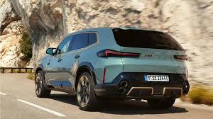

BMW XM
Powertrain and Performance
- Plug-in Hybrid System:
- The BMW XM combines a 4.4-liter V8 twin-turbocharged engine with an electric motor.
- Total Power Output:
- 653 hp (standard XM).
- 748 hp and 1,000 Nm of torque in the BMW XM Label Red, making it the most powerful production BMW ever.
- Transmission:
- 8-speed M Steptronic automatic transmission for smooth shifts.
- Acceleration:
- 0–100 km/h (0–62 mph) in 4.3 seconds for the XM.
- XM Label Red achieves 3.8 seconds for 0–100 km/h.
- Top Speed:
- Electronically limited to 155 mph (250 km/h), with the optional M Driver's Package raising it to 168 mph (270 km/h).
- Electric Range:
- Up to 88 km (55 miles) on pure electric mode, ideal for emission-free short drives.
- Drive System:
- M xDrive All-Wheel Drive ensures optimal traction and power distribution.
Exterior
- Bold and Distinctive Styling:
- Aggressive front fascia with large kidney grilles illuminated by Iconic Glow.
- Slim, split adaptive LED headlights for a futuristic look.
- Athletic Silhouette:
- Strong character lines, flared wheel arches, and coupe-like styling.
- Wheel Options:
- Standard 21-inch wheels, with optional 23-inch wheels for a bolder stance.
- Quad Exhaust System:
- Unique stacked hexagonal exhaust tips for an M-specific sporty design.
Interior
- Luxurious Cabin Design:
- Premium materials including Merino leather, Alcantara, and carbon fiber trims.
- M Lounge Rear Seats:
- Rear seats designed for exceptional comfort, with padded cushions and luxurious backrests.
- Illuminated Headliner:
- Sculpted headliner with 3D prism-like effects and ambient lighting.
- Infotainment System:
- A 12.3-inch digital instrument cluster.
- A 14.9-inch touchscreen infotainment system powered by iDrive 8.
Pictures
 


